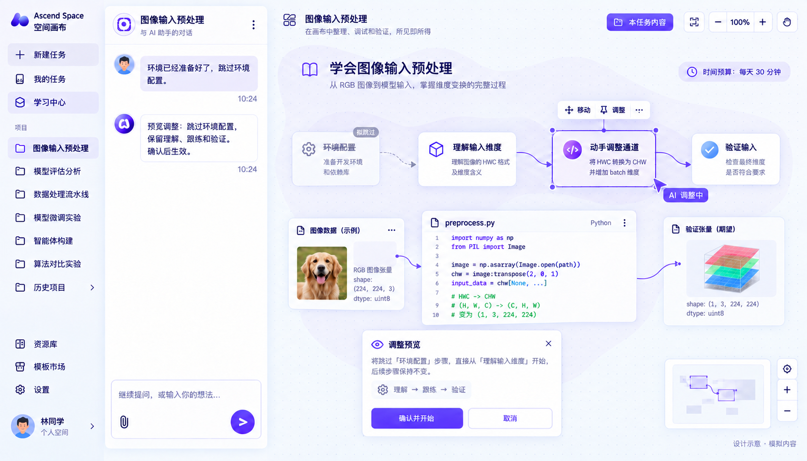
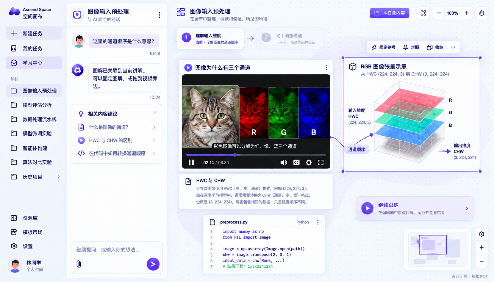
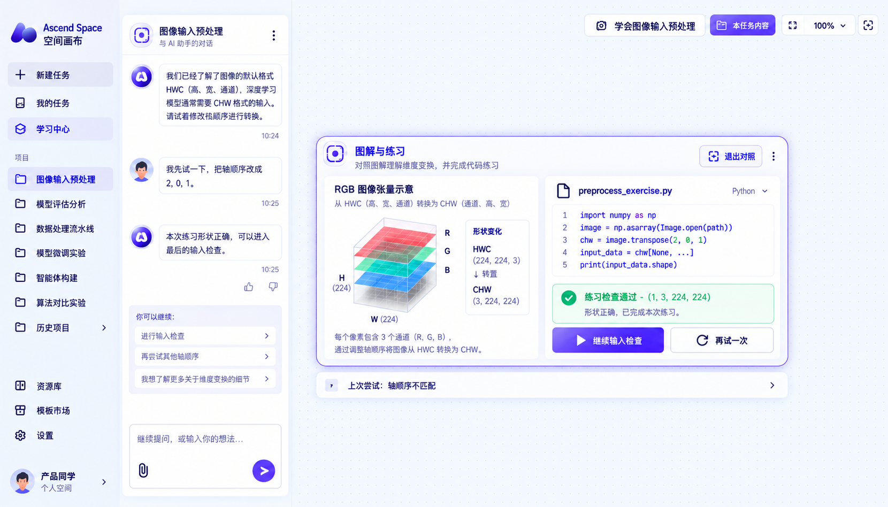
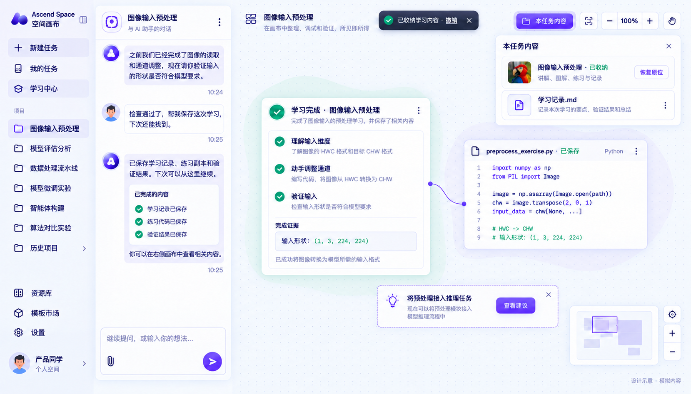
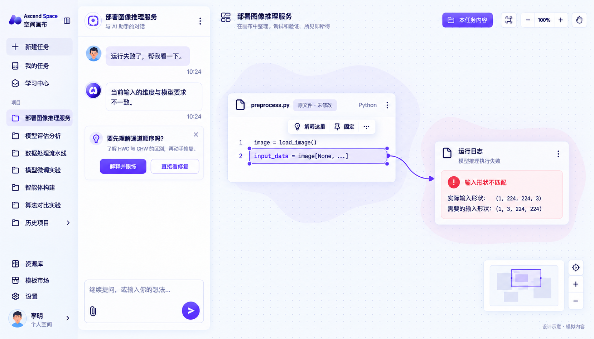
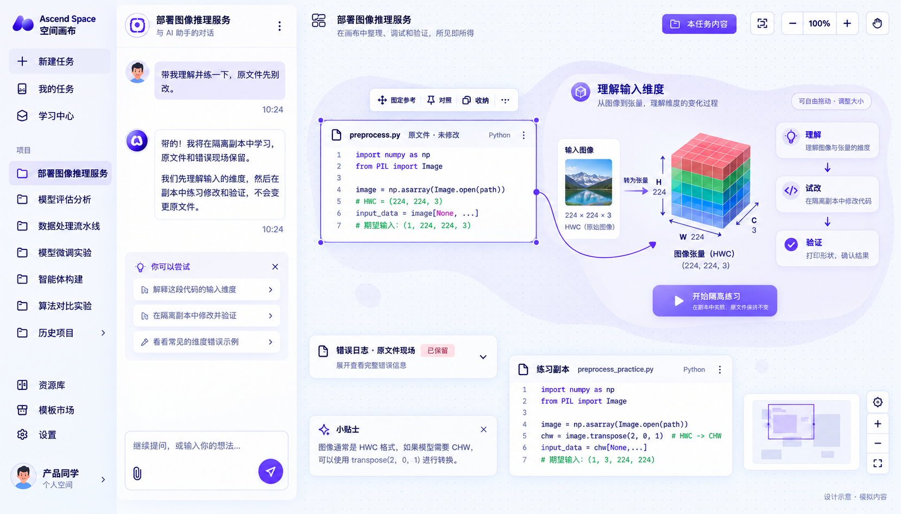
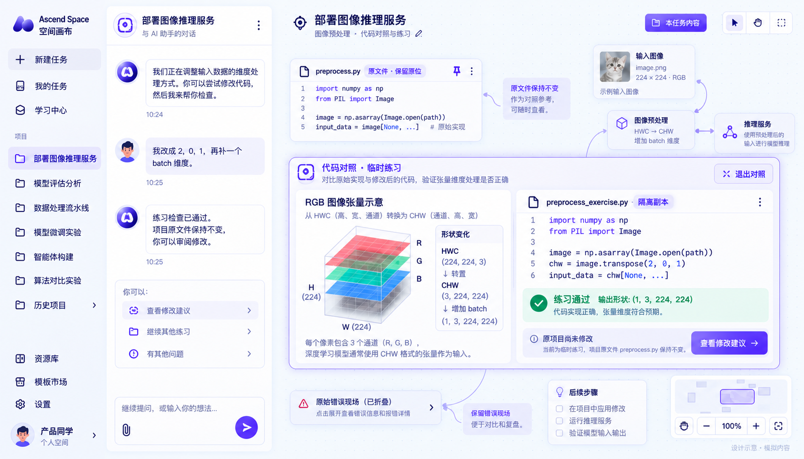
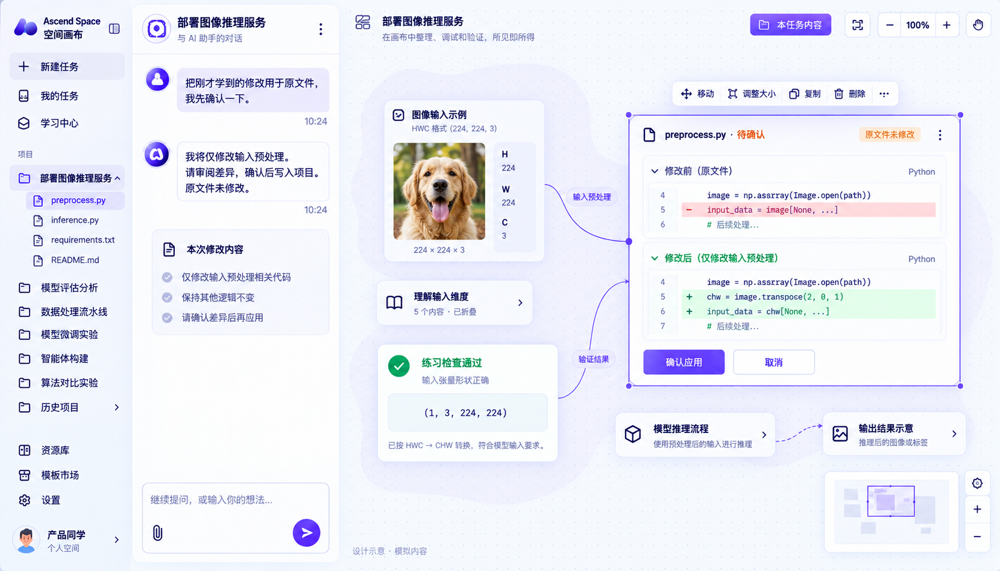
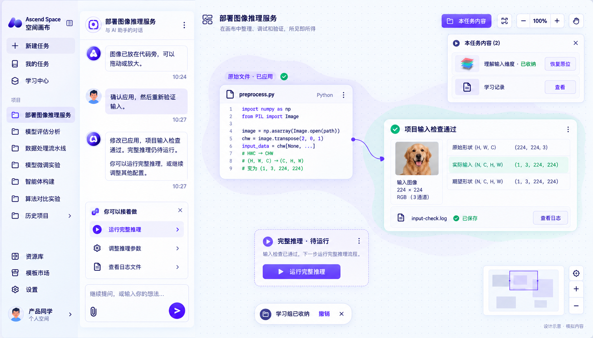

学习目标：学会图像输入预处理；终点：完成讲解、跟练与输入检查，保存可恢复的学习记录。




从目标或现成路径进入，画布随意图展开
表达目标 · 用户如何接着做
用户：进入“学习”，输入基础、目标和时间；也可选用已有路径。
1. 双入口汇合
对话提目标与浏览现有路径，共同进入可编辑的路径草案，支持明确目标和探索式进入。
2. 意图可见
基础与时间贴在目标旁，用户能检查 AI 使用了哪些信息，并直接修改。
3. 按需展开
初访画布保留空间，课程预览作为独立对象存在；后续内容围绕选择展开。
画布管理
初始只展开目标和少量相关预览；“本任务内容”保持关闭。
下一步
点击“生成学习路径”或“选用路径”，进入同一份可审阅草案。
对话与直接操作，共同修改眼前这条路径
调整路径 · 用户如何接着做
用户：告诉 AI“环境已准备好，跳过环境配置”；查看被影响的节点。
1. AI 操作落在对象上
在路径节点上显示选中、定位与拟变更状态，让用户看见 AI 正在改哪里。
2. 两种编辑共用预览
对话修改与节点直接操作都产生同一份变更预览；本图展示跳过，拖动排序沿用此规则。
3. 确认后再生效
“拟跳过”和确认／取消把草案与正式路径区分开；已有学习记录随节点保留。
画布管理
路径是画布中的可移动对象；选择节点才出现操作条，修改不重排其他参考。
下一步
确认并开始后，沿保留的“理解 → 跟练 → 验证”进入学习。
视频与图解就地关联，阅读位置由用户安排
理解内容 · 用户如何接着做
用户：观看讲解，在不理解的字幕处提问，再固定或移动图解。
1. 从内容发起解释
疑问绑定当前视频片段和概念，图解与字幕保持可见关联，减少反复描述。
2. 自由组织参考
图解有选中边框和就地工具条；可固定、放大或移到视频旁，阅读时位置稳定。
3. 节点自然接续
在当前内容下提供“继续跟练”；目标和完成标准沿用已确认路径，无需再次制定。
画布管理
视频、笔记、图解属于轻分组；对象可拖动、缩放、固定，无常驻功能 Tab。
下一步
点击“继续跟练”，当前图解可作为参考带入练习。
临时对照帮助跟练，结果直接留在本次尝试下面
跟练验证 · 用户如何接着做
用户：把轴顺序改成 2,0,1，补充 batch 维度，运行练习。
1. 临时聚焦
选定材料进入对照，减少视线往返；退出后恢复自由布局，聚焦不改变空间组织。
2. 反馈归属本次尝试
通过或失败直接跟在代码下面，上次结果折叠保留，便于比较修改和结果。
3. 按结果继续
通过后给出下一节点；失败时在当前内容中重试或补解释，不要求用户切换学习模式。
画布管理
“退出对照”恢复对象原位；前一学习组折叠，固定的参考仍可见。
下一步
检查通过后继续输入检查；若失败，就地提示并重试，原练习现场保留。
学习完成后收纳过程，保留能找回的成果
完成保存 · 用户如何接着做
用户：完成输入检查，保存学习记录与练习内容。
1. 完成与证据相连
完成摘要列出学过的内容和输入形状，区分“看过”与“练习检查通过”。
2. 收纳保留上下文
按组保存讲解、图解、练习与记录；恢复的是原对象及关系，不再复制一套内容。
3. 建议可选择
后续实践建议独立、可关闭；完成当前学习后，用户决定是否开启下一任务。
画布管理
收纳浮层按需打开；恢复返回同一组及原位置，撤销可立即找回。
下一步
下次从“本任务内容”恢复原位；是否进入推理任务由用户选择。
开发任务：部署图像推理服务；插入学习：理解并修正输入维度。学习完成后返回开发，完整推理仍是下一项任务。





学习入口贴近错误现场，用户决定是否展开
发现问题 · 用户如何接着做
用户：运行失败后请求诊断；选择“解释并跟练”，也可以直接查看修复。
1. 主动建议有依据
建议紧邻诊断回复，错误日志与代码有可见关联，用户能理解为什么建议学这一段。
2. 入口由用户控制
“解释并跟练”“直接看修复”和关闭共存，学习建议不占常驻顶部位置。
3. 绑定具体现场
问题指向选中代码与实际／预期形状，进入学习时沿用这些上下文。
画布管理
初始只保留原文件和日志；展开学习由用户触发，原位置不变。
下一步
选择学习后，在当前任务中展开局部学习组。
局部学习围绕原文件展开，原任务身份保持不变
展开学习 · 用户如何接着做
用户：要求先理解并练习，同时明确原文件暂不修改。
1. 任务连续
左侧仍选中开发任务，中间沿用当前对话；学习是任务内的一段活动。
2. 原件与副本可辨
原文件、错误现场与练习副本分别标明身份，学习操作的影响范围可见。
3. 轻分组组织材料
相关图解和局部路径属于同组；可整体收起，同时允许独立摆放参考。
画布管理
学习组使用轻边界，内部内容可调整位置；原文件固定在组旁。
下一步
点击“开始隔离练习”，在副本中尝试。
在副本中验证理解，项目文件继续保持原状
隔离跟练 · 用户如何接着做
用户：修改通道顺序并补 batch 维度，运行练习检查。
1. 安全试错
修改发生在隔离副本；练习失败可以重试，不影响项目原文件。
2. 结果边界明确
通过信息显示输入形状，同时显示原项目未修改，避免把练习结果当成交付结果。
3. 随时回到现场
退出对照恢复自由布局；查看修改建议连接原文件，学习与开发之间有明确返回点。
画布管理
进入对照只影响选中的图解和练习；原文件及错误现场原位保留。
下一步
点击“查看修改建议”回到项目修改审阅。
把练习转成可审阅的 Diff，确认后才写入项目
应用修改 · 用户如何接着做
用户：要求把练习用于原文件，检查差异并确认应用。
1. 变更具体可见
删除和新增代码分开显示，用户可以定位影响范围，理解练习如何转成项目修改。
2. 验证依据可对照
练习结果保留在差异旁，为审阅提供上下文；不必重新打开整个学习组。
3. 确认具有边界
确认应用与取消作用于这次项目修改；收起学习材料不等于应用，也不等于删除。
画布管理
学习组折叠，Diff 成为当前焦点；练习结果固定为参考，不重新铺满画布。
下一步
确认后写入原文件，再进行项目输入检查；取消则保持项目不变。
验证原项目的输入，再把学习过程收入任务记忆
返回验证 · 用户如何接着做
用户：确认应用，重新进行项目输入检查，然后收纳学习组。
1. 回到原任务验证
使用项目中的修改后文件检查输入，结果与项目日志相连，完成从练习到实际文件的交接。
2. 完成状态分层
练习通过、修改应用、项目输入通过分别呈现；完整推理尚待执行。
3. 收纳后仍可复用
学习组从当前画布移出，任务保留其索引和原位置；需要时整组恢复。
画布管理
原文件与项目结果留在画布；学习组进入可关闭的收纳浮层，支持恢复／撤销。
下一步
继续运行完整推理；若出现新的问题，在同一任务中再次展开相关学习。
| 交互 | 何时发生 | 用户能看见与控制什么 | 对应步骤 |
|---|---|---|---|
| 自由展开 | 从当前问题或路径节点打开内容 | 新内容在相关对象附近展开；拖动／缩放由用户控制 | A1、A3、B1、B2 |
| 轻分组 | 同一段学习包含多个对象 | 保留组名和关联；内部对象可自由排放 | A3、B2 |
| 临时聚焦 | 用户选择需要并排对照的对象 | 仅选中内容进入对照；退出恢复原位置 | A4、B3 |
| 固定参考 | 操作时需要保留原文件或结果 | 参考留在可见位置，不随下一步被自动收起 | A3、B2–B4 |
| 折叠／收纳 | 完成当前活动或主动整理 | 折叠在画布留摘要；收纳移出画布但保留索引 | A5、B4、B5 |
| 恢复／撤销 | 需要复习，或刚才收错内容 | 返回同一组及其关系、原位置；当前内容不被替换 | A5、B5 |
稳定性规则：阅读时不自动移动对象；完成、继续、退出对照或手动整理后才调整布局。收纳不等于删除，确认路径不等于应用项目代码。
验证重点：用户能否找到原文件、区分副本与正式修改、恢复收纳内容，以及说清当前通过的是哪一项检查。